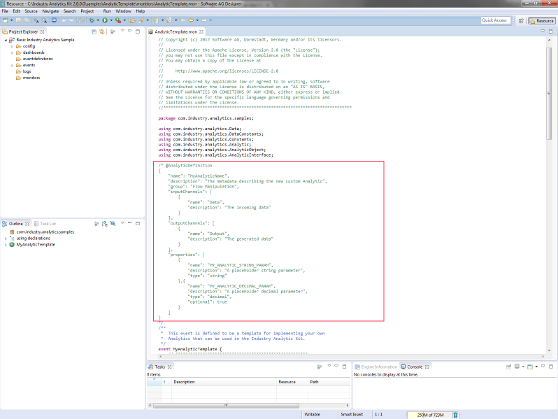

Analytics Builder Customising Guide
The Analytics Panel contains the analytics which have been provided with the
Industry Analytics Kit. Where required, end users are also able to extend their
Analytics Builder by adding their own custom analytics.
Custom Analytics
- Writing a custom analytic
The Industry
Analytics Kit provides an analytic template which can be used as a starting
point for writing a custom analytic. The analytic template is available
inside the Industry Analytics Kit under the samples folder.

Inside the
AnalyticTemplate.mon file is an @AnalyticDefinitions section which is read
by the Analytics Builder when a custom analytic is loaded.
This section
provides the Analytics Builder with details such as the name of the
analytic, the input and output channels and the analytic properties.
When the user is
building the custom analytic, it is important that the details inside the
@AnalyticDefinition correctly reflect the channels and properties which are
used by the analytic.
Also, to ensure
that the custom analytics are displayed separately from the default
analytics, set the group in the @AnalyticDefinition to something like
‘Custom’.
Note that the
custom analytics can be displayed separately by using different group
names in the @AnalyticDefinitions
- Loading custom analytics into the Analytics Builder
Once the custom
analytic has been written, it can be loaded into the Analytic Builder.
To load a custom analytic
into the Analytics Builder, click on the right most dropdown in the
navigation bar. Under 'Custom Analytic', click on the 'Load' button
Select one or more
custom analytic .mon files.
The
@AnalyticDefinition definition from each of these files will be read and the
custom analytics will now be displayed at the bottom of the Analytics Panel
under the group you have defined in the @AnalyticDefinition
Note:
When you load custom analytics into the Analytics Builder, this
information is not sent outside of your local browser.
If the browser
window is refreshed, the custom analytics you have loaded will be lost
and the original default analytics will be displayed.
Custom Metadata
To prevent having to select and load
all of your custom analytics each time the Analytics Builder web page is
loaded, metadata export and import functionality has been provided.
Once you have
imported all of your custom analytics, you can export all of the metadata
into a custom metadata file. This file will contain the metadata for all of
the supplied Analytics, plus the metadata for the custom analytics you have
manually loaded using your .mon files.
To export the
metadata, click on the right most drop-down in the navigation bar. Under
'Metadata', click on the 'Export' button. This will immediately create a
metadata.json file in your download folder. This file can be renamed to
whatever you want to call your custom metadata.
To reset the
Analytics Builder back to the list of default analytics, we will need to
press F5
Now, to load your
custom metadata, click on the right most drop-down in the navigation bar.
Under 'Metadata', click on the 'Import' button.
Select the
metadata.json file you saved earlier and click on 'Open'
The Analytics Panel
will now display the analytics and custom analytics from the metadata file
Changing the Sample Metadata
When you export the metadata to the metadata.json file,
the samples which are displayed in the 'SAMPLE' menu option in the menu bar
are also stored into this file. These can be amended to display different
samples.
To change the samples :
1. Find the .evt files (configuration
files that you have saved previously) that you want to display in your
Analytic Builder SAMPLES dropdown
2. Open the metadata.json file which
you have created using 'Exporting Metadata' above
3. Before adding the sample to the
metadata.json, you will need to escape the .evt data using a website such as
https://www.freeformatter.com/json-escape.html
4. Replace the existing sample data in
the metadata.json file with your own escaped samples
5. Save the metadata.json file
6. When you import the metadata using
the 'Import Metadata' above, the samples in the SAMPLES drop-down will now
contain your custom list of samples